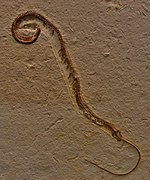

Introduction
Snakes are elongated, legless, carnivorous reptiles of the suborder Serpentes.[2] Like all other squamates, snakes are ectothermic,
amniote vertebrates covered in overlapping scales. Many species of snakes have skulls with several more joints than
their lizard ancestors, enabling them to swallow prey much larger than their heads with their highly mobile jaws. To
accommodate their narrow bodies, snakes' paired organs (such as kidneys) appear one in front of the other instead of
side by side, and most have only one functional lung. Some species retain a pelvic girdle with a pair of vestigial
claws on either side of the cloaca. Lizards have evolved elongate bodies without limbs or with greatly reduced limbs
about twenty-five times independently via convergent evolution, leading to many lineages of legless lizards.[3] Legless
lizards resemble snakes, but several common groups of legless lizards have eyelids and external ears, which snakes
lack, although this rule is not universal (see Amphisbaenia, Dibamidae, and Pygopodidae).
Etymology
The English word snake comes from Old English snaca, itself from Proto-Germanic *snak-an- (cf. Germanic Schnake "ring snake",
Swedish snok "grass snake"), from Proto-Indo-European root *(s)nēg-o- "to crawl", "to creep", which also gave sneak
as well as Sanskrit nāgá "snake".[11] The word ousted adder, as adder went on to narrow in meaning, though in Old English
næddre was the general word for snake.[12] The other term, serpent, is from French, ultimately from Indo-European *serp-
(to creep),[13] which also gave Ancient Greek hérpō (ἕρπω) "I crawl".
Evolution
Front limbs are nonexistent in all known snakes. This is caused by the evolution of their Hox genes, controlling limb morphogenesis.
The axial skeleton of the snakes’ common ancestor, like most other tetrapods, had regional specializations consisting
of cervical (neck), thoracic (chest), lumbar (lower back), sacral (pelvic), and caudal (tail) vertebrae. Early in snake
evolution, the Hox gene expression in the axial skeleton responsible for the development of the thorax became dominant.
As a result, the vertebrae anterior to the hindlimb buds (when present) all have the same thoracic-like identity (except
from the atlas, axis, and 1–3 neck vertebrae).
Origin

There is fossil evidence to suggest that snakes may have evolved from burrowing lizards, such as the varanids (or a similar
group) during the Cretaceous Period.[21] An early fossil snake relative, Najash rionegrina, was a two-legged burrowing
animal with a sacrum, and was fully terrestrial.[22] One extant analog of these putative ancestors is the earless monitor
Lanthanotus of Borneo (though it also is semiaquatic).[23] Subterranean species evolved bodies streamlined for burrowing,
and eventually lost their limbs.[23] According to this hypothesis, features such as the transparent, fused eyelids
(brille) and loss of external ears evolved to cope with fossorial difficulties, such as scratched corneas and dirt
in the ears.[21][23] Some primitive snakes are known to have possessed hindlimbs, but their pelvic bones lacked a direct
connection to the vertebrae. These include fossil species like Haasiophis, Pachyrhachis and Eupodophis, which are slightly
older than Najash.[19] This hypothesis was strengthened in 2015 by the discovery of a 113m year-old fossil of a four-legged
snake in Brazil that has been named Tetrapodophis amplectus. It has many snake-like features, is adapted for burrowing
and its stomach indicates that it was preying on other animals.[24] It is currently uncertain if Tetrapodophis is a
snake or another species, in the squamate order, as a snake-like body has independently evolved at least 26 times.
Tetrapodophis does not have distinctive snake features in its spine and skull.[25][26]
types
- venomous
- non-venomous
Paambu page
Ghosts in the Ancient World
Definition
To the people of the ancient world,there was no doubt that the soul of a human being survived bodily death. Whatever an individual's
personal views were on the subject, culturally they were brought up with the understanding that the dead lived on
in another form that still required some kind of sustenance, in an afterlife that was largely dictated by several
factors: the kind of life they had lived on earth, how their remains were disposed of at their death, and/or how
they were remembered by the living.

Ghosts In Mesopotamia
GHOSTS COULD APPEAR TO PEOPLE ON EARTH TO RIGHT SOME KIND OF WRONG.
In Mesopotamian culture, death was the final act of life from which there was no return. The land of the dead was known by
many names; among them was the Irkalla, the realm beneath the earth known as the "land of no return", where the souls
of the dead dwelt in a dreary darkness, fed off dirt, and sipped from mud puddles (though there were other visions
of the afterlife, such as that expressed in the work Gilgamesh, Enkidu and the Netherworld). This existence was the
final end for all the living, no matter how great or poor a life they had lived, and it was ruled over by the dark
queen Ereshkigal.
Egyptian Ghosts
THE LIVING WHO WERE HARASSED BY THE GHOST WOULD HAVE TO PLEAD THEIR CASE DIRECTLY TO THE RETURNED SPIRIT IN HOPES OF A REASONABLE
RESPONSE.
In ancient Egypt, the return of a ghost was also considered a very serious matter. For the Egyptians, non-existence was an
intolerable concept, and it was believed that, at death, the soul traveled to the Hall of Truth where it was judged
by Osiris and the 42 Judges by having its heart weighed in balance with the white feather of truth; if the heart
was found lighter than the feather, the soul proceeded on to the afterlife, while if it was heavier, it was thrown
to the floor where it was eaten by a monster and the soul would cease to exist. One's heart would be lighter if one
had lived a good life and heavier if one had not.
Ghosts in China & India
DURING THE GHOST FESTIVAL, PEOPLE LEAVE OUT FOOD AND GIFTS FOR THE DEAD IN THE HOPE THAT THEY WILL REMAIN IN THEIR OWN REALM
AND NOT TROUBLE THE LIVING.
In Chinese culture the spirit of a person who had drowned, died alone, died in battle, or suffered some other death where
they went unburied would appear bodily and could only be seen at night by torch light. The spirit of an ancestor
who wished to relate some information or give a warning would appear in a dream. Ghosts were considered a reality
by the Chinese philosopher Mo Ti (470-391 BCE) who argued in favor of accepting the report of the ghost of the minister
Tu Po returning from the afterlife and assassinating Xuan, the king of Zhou.